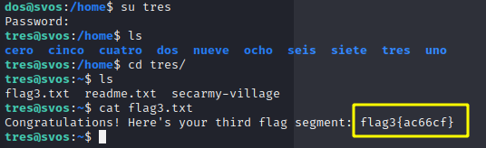
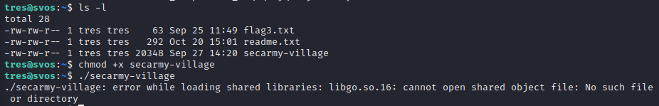
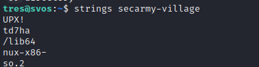
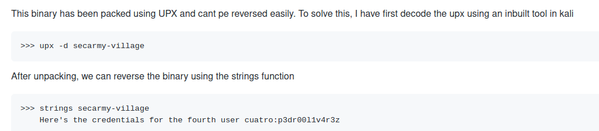

Flag3
tres:r4f43l71n4j3r0

Lets see what's in readme
So we got a binary named secarmy-village
let's try running it, But it's broken.

Let's try to grasp redables from the binary

we find it's packed using UPX so lets decode that
